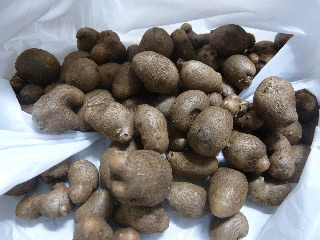
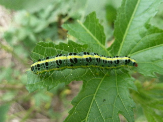

遊びで植物を育てよう
2013/09/06
モロヘイヤが茶色くなりました。
モロヘイヤの葉っぱに茶色い点々が出来ました。

あーあ、
秋になって寒くなったせいなのか、豪雨に打たれたせいなのか分かりませんが、これはもう食べれませんね。（たぶん）
また気温が上がって、新芽が出てこないかな。
【9月TOP】
【日記TOP】
【園芸TOP】
2013/09/10
ムカゴを収穫しました。
食べれそうな大きさになっていたので収穫しました。

ポロポロと簡単に取れるので収穫が楽しいです。
【9月TOP】
【日記TOP】
【園芸TOP】
2013/09/14
オクラにはこの虫です。
オクラにつく害虫といえばこいつです。

今年も沢山捕まえた気がする。
フタトガリコヤガってなまえの蛾の幼虫なんですね。
【9月TOP】
【日記TOP】
【園芸TOP】
過去の日記
【2024年9月の日記】
【2023年9月の日記】
【2022年9月の日記】
【2021年9月の日記】
【2020年9月の日記】
【2019年9月の日記】
【2018年9月の日記】
【2017年9月の日記】
【2016年9月の日記】
【2015年9月の日記】
【2014年9月の日記】
【2013年9月の日記】
【2012年9月の日記】
【9月TOP】
【日記TOP】
【園芸TOP】
畑仕事じゃないよ。
【おいしいものを食べよう。】【たくさん寝よう。】
【ソロ活をしよう!】【季節感のあることをしよう。】【動画視聴はほどほどに。】【当サイトの全てのコンテンツは無断転載禁止です。】